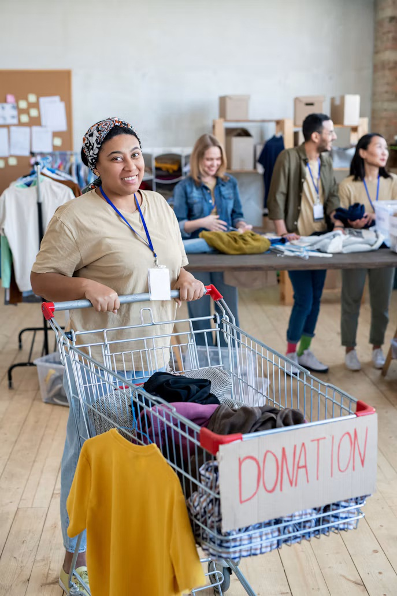

Colabora con ArropaBide: Cómo y qué donar
El abastecimiento de nuestro punto local depende de la solidaridad de los particulares y de la colaboración de los pequeños comercios del distrito. Para garantizar la utilidad y dignidad de las entregas, aplicamos criterios claros de admisión.
Criterios de admisión obligatorios
Productos Aceptados
- Ropa y calzado: Prendas limpias, en buen estado de conservación, sin manchas, roturas ni costuras abiertas. Calzado por pares limpios.
- Higiene personal: Jabón corporal, champú, pasta de dientes, cepillos precintados, desodorante, esponjas y pañales infantiles.
- Requisito de higiene: Todos los artículos de aseo deben estar sin abrir, precintados de fábrica y en perfecto estado.
Productos No Aceptados
- Ropa sucia, rota, desgastada o con desperfectos graves.
- Ropa interior usada o prendas inapropiadas.
- Productos cosméticos o higiénicos abiertos o caducados.
- Mobiliario, colchones o aparatos electrónicos de gran tamaño.
Nota informativa: El textil recibido que no supera los filtros de calidad se deriva directamente a plantas de reciclaje textil para su reutilización como fibra industrial.
Entrega presencial y comercios colaboradores
Particulares: Puedes traer tus donaciones directamente a nuestro local central dentro de los horarios de apertura ordinarios.
Comercios locales: Si dispones de excedentes de stock textil o productos higiénicos descatalogados, contacta con nosotros para coordinar la entrega y emitir el justificante de colaboración con el barrio.

Solicitud de recogida a domicilio
La recogida a domicilio se reserva exclusivamente para personas con movilidad reducida, personas mayores o donaciones comerciales de gran volumen dentro del distrito de Otxarkoaga-Txurdinaga.